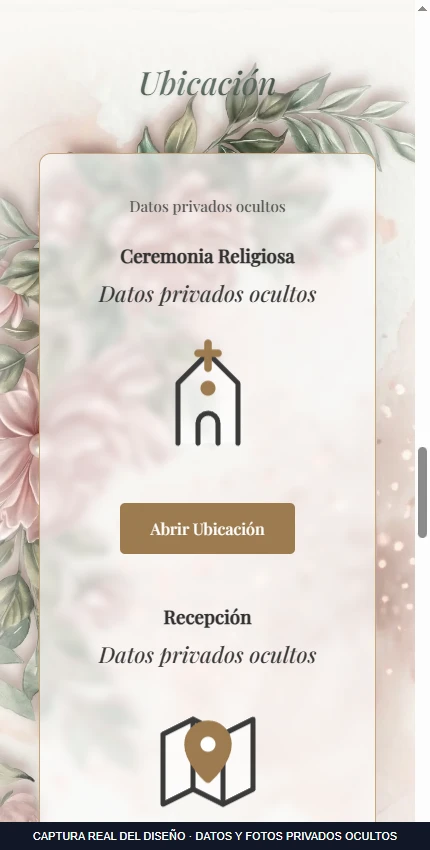
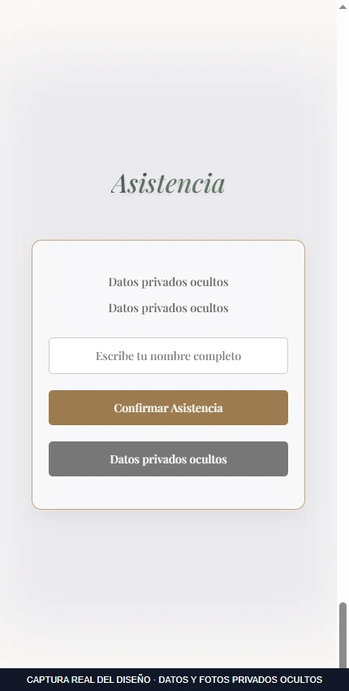

Saltar al contenido
Saltar al contenidoInvitación digital
Experiencia web para presentar un evento, sus ubicaciones y la confirmación de asistencia.
 Ampliar imagen
Ampliar imagenEl proyecto
Invitación digital para presentar un evento mediante una apertura animada, cuenta regresiva y la información de ceremonia y recepción.
Ofrece a los invitados un recorrido desde la presentación hasta las ubicaciones y la confirmación mediante enlace externo. Las capturas públicas ocultan los datos privados del evento original.
Funciones principales
- Apertura animada de una invitación
- Cuenta regresiva a la fecha del evento
- Secciones de ceremonia y recepción
- Confirmación de asistencia mediante enlace externo
Galería del proyecto
3 imágenes · en el orden seleccionado
Selecciona una imagen para ampliarla. Usa las flechas para recorrer la galería.
Ampliar ↗

Ampliar ↗

Ampliar ↗EN LA PRÁCTICA
Recorrido de una invitación
- 1
Abrir la invitación y ver la animación de presentación.
- 2
Consultar la fecha, la cuenta regresiva y las secciones del evento.
- 3
Introducir un nombre y preparar la confirmación de asistencia.
El original utiliza un enlace externo para confirmar. El ejemplo muestra un mensaje local con datos ficticios.
Probar ejemplo de uso ↗Abre primero el gestor local con python tools/manage_media.py.